这是一个TT星档案库
TT星：一半是充满混乱的不死大陆，一半是和谐正义的水果大陆 水果大陆与不死大陆对立，且战争不断。
水果大陆
这是一个美好的水果王国，里面的居民都是由水果转化的，所以人都自给自足，生活幸福。
这里的人平均寿命为100岁，人人都有魔法。 白霂是这里的女王，她仁慈、善良、博爱。 这里的水果蔬菜分为可食用和可培育成人两种类型。这里的食物质量优质，水果饱满香甜，蔬菜新鲜营养。 水果战士由白霂女王亲自培育，转化成人。 水果大陆沿海处盛产优质水果鱼，这里的水果鱼肉质鲜美，香甜多汁。 美食岛，是水果大陆不可切割的一部分。岛上分布着布丁山、果汁河、冰激凌雪山、西兰花树等等，因为优质的土壤滋养，它们永远不会坏掉。
不死大陆
这里是一个弱肉强食的王国。
这里所有的人都拥有不死之身。 这里存在文明和秩序，甚至有着小镇、高楼大厦以及学校。可这里的法律似乎只保护财产，且对个体不怎么友好，因此霸凌、凌辱、虐待事件层出不穷，因为肉体不会死，精神状态也很容易恢复。 这里不存在医院，但存在精神病院，因为不死人的特性，他们很快就能康复。 他们永远不用畏惧死亡，但是拥有魔法的人只占少数。 不死大陆沿海特产：不死海鱼，大概有一本书那么大，可以无限从其身上获得鱼肉，除非直接一口吞掉；水晶水母，可以化成水母汁直接饮用，有缓解精神压力作用。
水果大陆居民档案
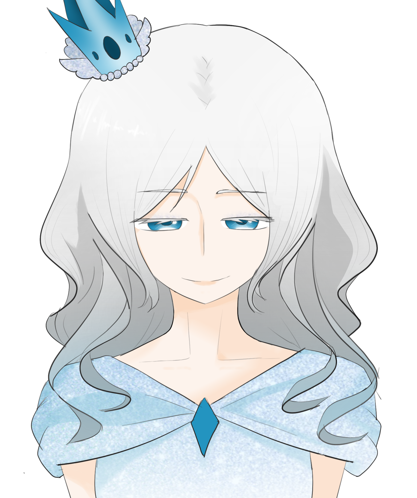
白霂
身高：172cm 体重：66kg 她是水果大陆的女王，与不死大陆、不死女王（怜怜）对立。 她坚守正义、善良，主旨是用温暖滋润水果大陆；她会用尽全力保护自己的子民以及自己的大陆。 她的性格温和，仿佛能包容一切。 水蜜桃是她的女儿。 魔法技能：空间重塑 魔法能力：白光四射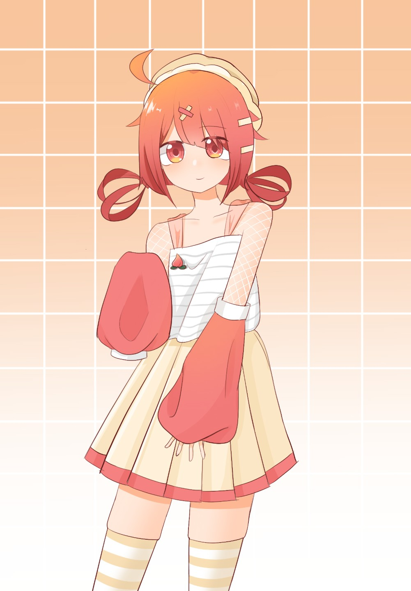
水蜜桃
身高：160 体重：50kg 温柔美丽且可爱，喜欢做甜点，大家都喜欢吃她做的美食，会因为别人快乐而感到快乐，话不算太多，语气轻声细语且很温柔，会默默保护自己亲近的人；曾收留过奶油和瓜子并赋予它们变成人形的魔法。 魔法技能：甜蜜冲击 魔法能力：甜蜜治愈（治疗系），净化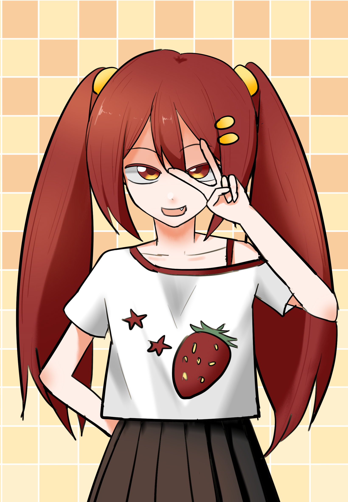
草莓
身高：164cm 体重：54kg 是一个傲娇但是富有正义感的大小姐，有时起到领袖作用，性格直率、勇敢；爱着自己的伙伴们，会保护大家。 魔法技能：热情火焰 魔法能力：酸涩屏障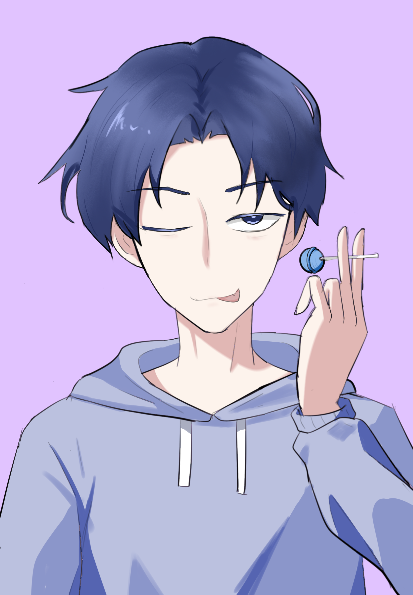
蓝莓
身高：178cm 体重：68kg 爱玩爱吃并且不按套路出牌，有时还会添麻烦，但有时也会有靠谱的一面；是草莓的哥哥，经常和草莓打打闹闹；性格幽默，是水果战士四人团队中的笑料。 魔法技能：冰锥冲击 魔法能力：水波环绕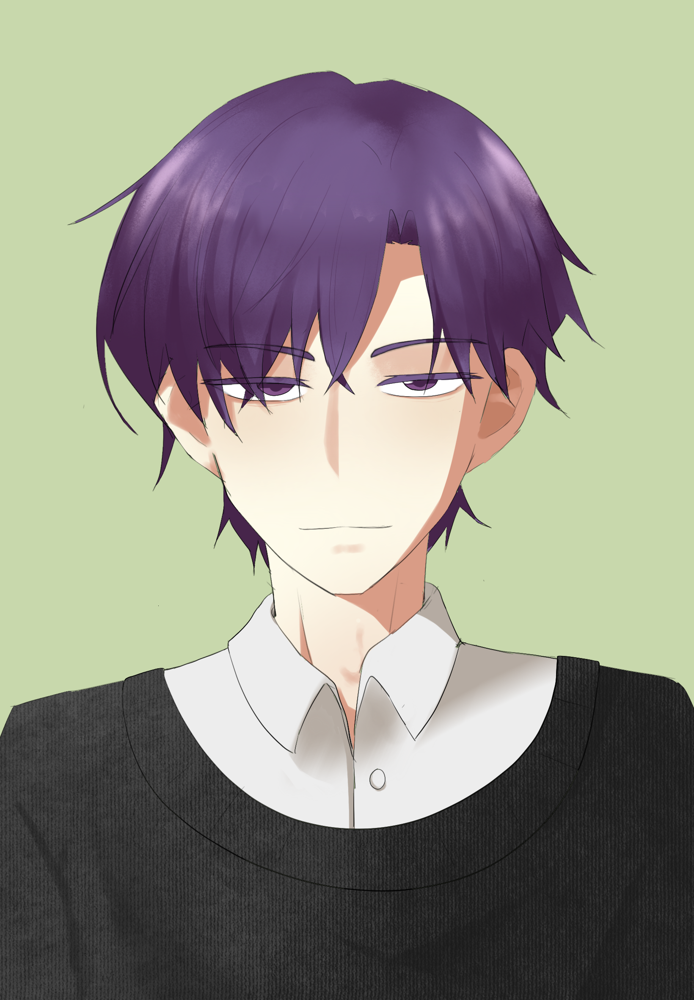
葡萄
身高：180cm 体重：72kg 是富有正义感、靠谱的水果战士，也是水蜜桃的哥哥，乐于助人，有事第一个冲上去，会保护大家；善于冷静分析。 魔法技能：闪电霹雳 魔法能力：数字定位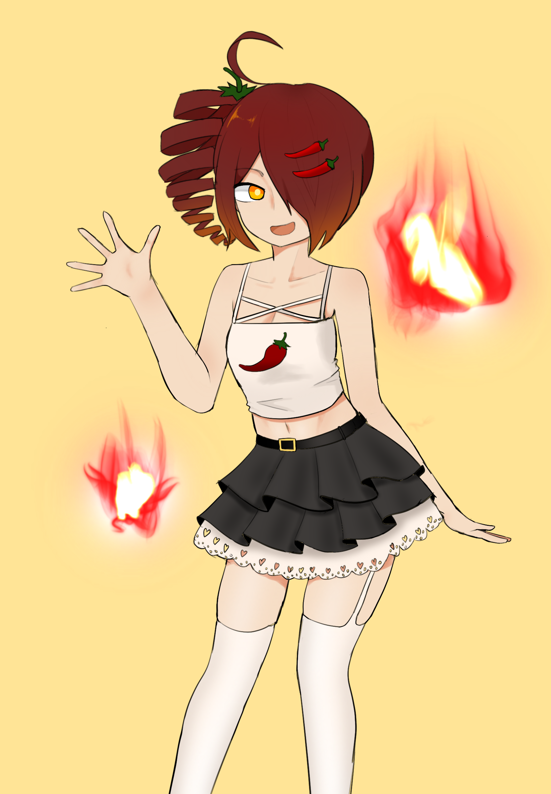
辣椒
身高：155cm 体重：50kg 是个辣妹，热情如火，喜欢吃辣；自信阳光，十分热衷于交朋友，外向开放，喜欢尝试各种各样的辣味美食；爱笑，似乎没有难过的时候。 魔法技能：热情似火 魔法能力：辣辣辣辣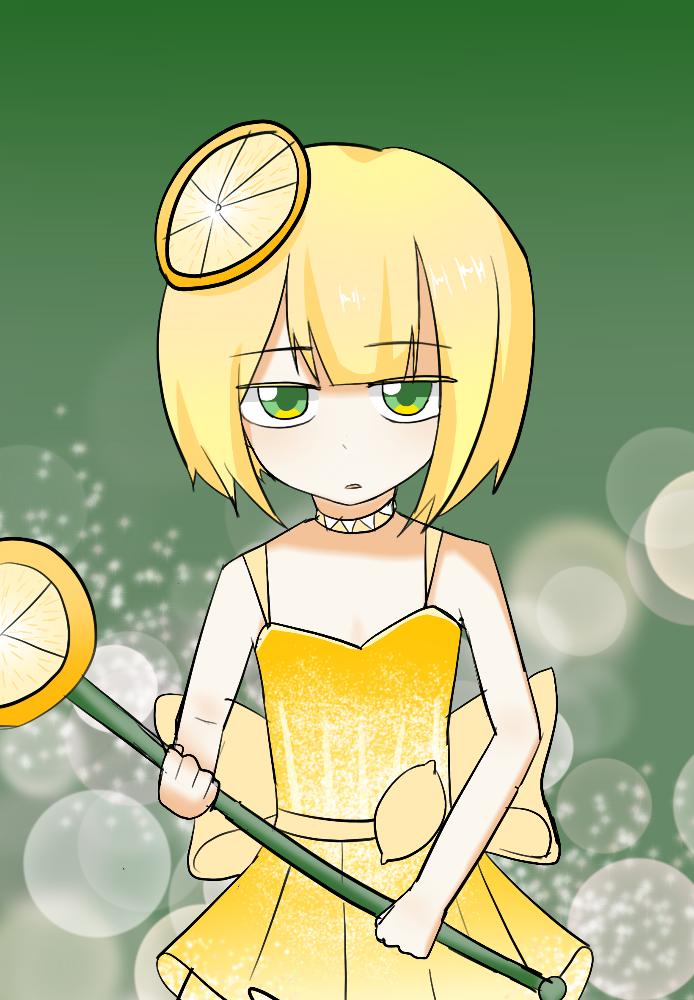
柠檬
身高：140cm 体重：40kg 是一个小女孩，刚刚加入水果战士，外表十分软萌可爱，但是几乎不怎么开口说话；性格内向内心敏感，但是有理想，梦想是和水果战士们一起拯救世界。 魔法技能：冰鲜封锁 魔法能力：酸涩气泡不死大陆居民档案
怜怜
身高：170cm 体重：62kg 她是不死大陆的女王，与水果大陆、水果女王对立（白霂）。 有着非常大的野心，似乎会为了利益不择手段，妄想霸占水果国的美食岛，有传言说她想要当tt星的霸主。 想要通过人格分裂人类女孩麦芽研究“多人格技能切换”技术，以此来发展她的国力。 似乎什么都不怕，非常强大，高傲且自信，会想办法得到她想要的一切。 魔法技能：空间撕裂 魔法能力：烟雾笼罩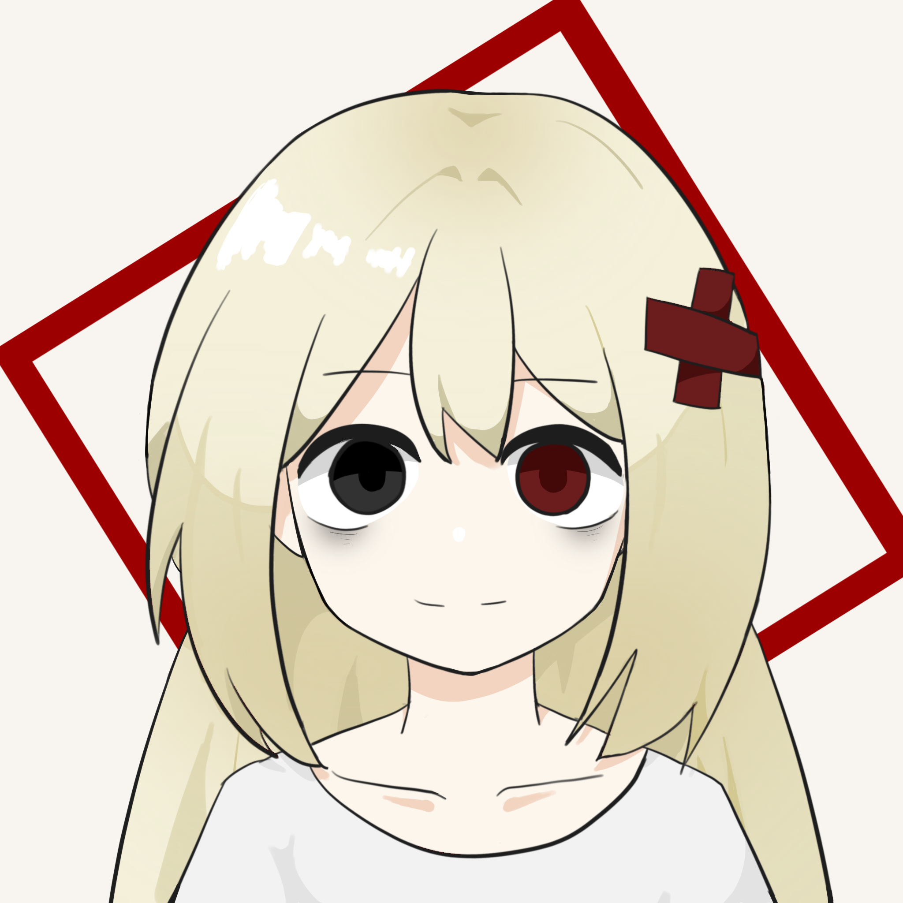
小怜
身高：169cm 体重：60kg 小怜平时面无表情，但在与人相处时会表现出玩世不恭的一面。 她对做无聊的任务本身并没有兴趣。 她的伤口可以在短时间内无限恢复，就算断肢也能无限再生，不过平时隐藏的算好。 年龄未知，长相和人类没有任何区别，且相貌异常貌美。 不死大陆捕手编号：TT-07 魔法能力：空间转移
莱液
身高：182cm 体重：65kg 怜怜手下的重要研究人员。常以微笑示人，表现斯文得体，似乎没什么脾气，极度温柔。主导麦芽实验以及小怜改造实验，怜怜十分看重他，为了参与更多“有趣”的实验，对怜怜表现出忠诚。 魔法技能：洗脑操控类 魔法能力：洞察之眼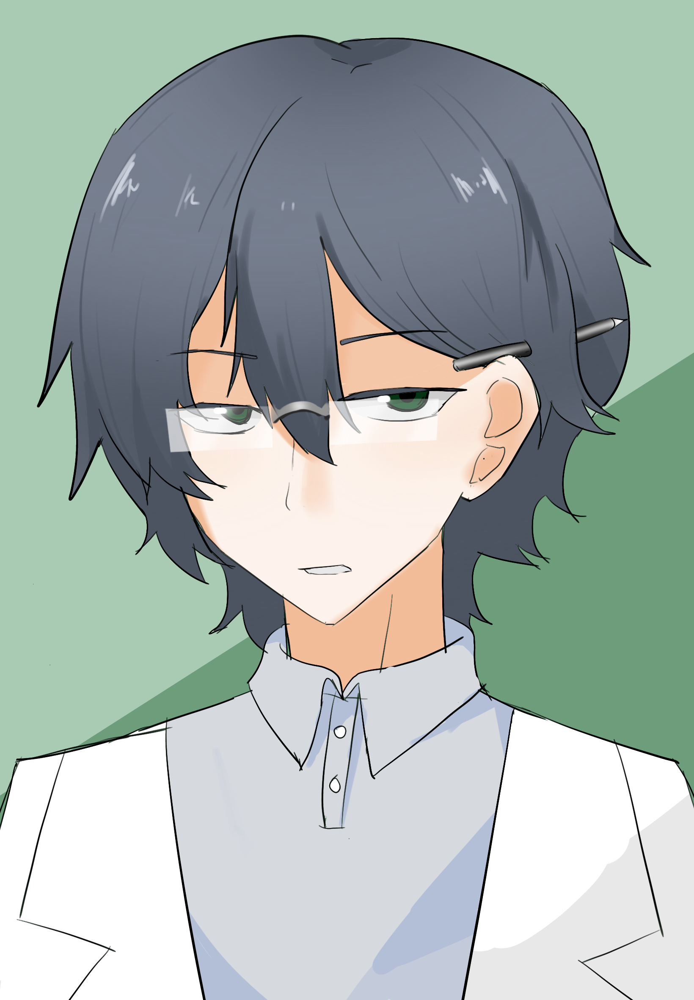
理在研
身高：181cm 体重：64kg 不死大陆的研究员之一，莱液的同事，性格内敛，做事认真专一。参与麦芽相关的研究项目。 魔法技能：数据收集 魔法能力：空间转移
柳
身高：168cm 体重：59kg 是个和小怜一样被收进实验室的不死大陆女孩，编号（TT-06）；命运和小怜相似，是小怜的前女友；曾经是个开朗温柔的女孩，如今语气里却透着难过，但还是掩盖不了她活泼的本质。 语气柔和，再生能力很强。 魔法技能：锁链束缚 魔法能力：空间禁锢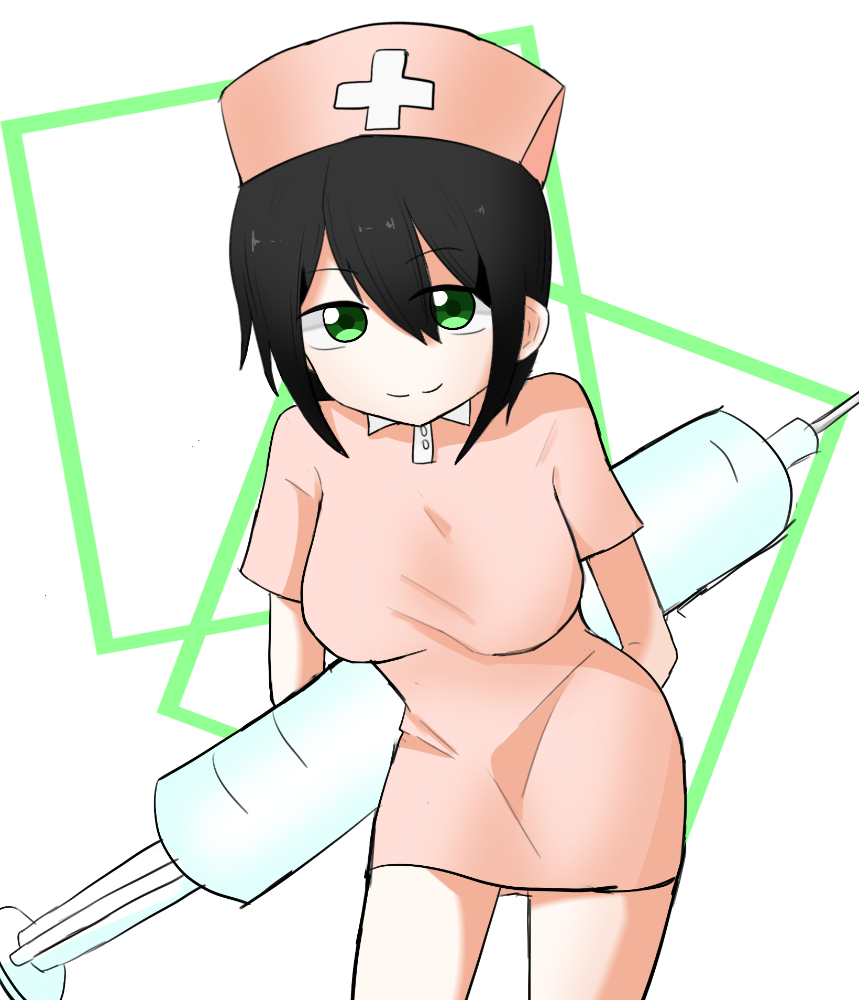
珍
身高：157cm 体重：52kg 不死大陆捕手编号（TT-05），乐观开朗，对工作似乎表现出积极，麦芽在实验室时的日常监督者。 魔法技能：麻醉/硫酸 魔法能力：爱心治疗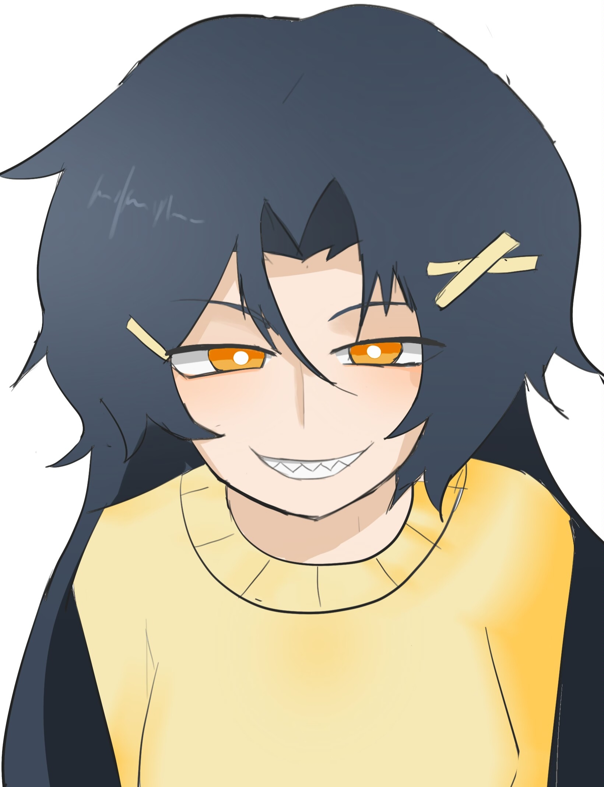